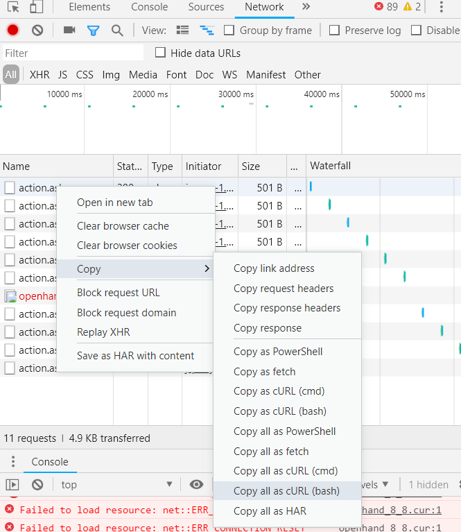

Hồi sinh viên, phương tiện đi lại chính của mình là xe bus, đi làm rồi thì thi thoảng mới có dịp đi mặc dù rất muốn.
Có một câu chuyện hay gặp khi đợi xe đó là mặc dù đường vắng, lịch chạy 10 phút 1 chuyến thì thường bạn hay có cảm giác kém may mắn khi phải đợi lâu hơn 10 phút. Dĩ nhiên trừ hôm nào ra phát có xe luôn hoặc cắm đầu cắm cổ chạy vừa kịp lúc xe tới, còn không thì lúc nào cũng thấy mình đen đen.
Trước đây mình cũng chẳng để ý đến nó, thời sinh viên thì có quá nhiều thời gian rảnh mà, nhưng khi đi làm, có gia đình, có con rồi mới thấy thời gian đợi xe thực sự là quá lãng phí. Thời gian ấy mình có thể về sớm hơn để chơi với con thì tốt (thực ra là ở công ty reddit, 9gag muộn hơn :-) ).
When waiting for a bus that comes on average every 10 minutes, your average waiting time will be 10 minutes.
Cái vụ đợi xe và thấy mình đen đen kia thực ra có một nghịch lý gọi là Waiting Paradox để giải thích. Ai quan tâm có thể xem bài viết: The Waiting Time Paradox, or, Why Is My Bus Always Late?. Phần diễn giải thấy nhiều toán, nhiều chữ là mình sợ rồi, chỉ biết tóm gọn lại là: "Giả sử xe đến mỗi 10 phút, bạn đến điểm dừng một cách ngẫu nhiên, thì thời gian chờ xe trung bình của bạn là 10 phút".

Bây giờ, làm sao để tối giản thời gian đợi xe? Cách đơn giản nhất là căn thời gian bao giờ xe đến thì phi ra cửa checkout rồi chạy xuống. Để căn được thời gian này trong khi vẫn ngồi ịn ở công ty thì mình viết một đoạn script Python, track xem bao giờ xe bus tiếp theo sẽ đến thông qua API của timbus, một website của Transerco.
Phần hướng dẫn làm sao để mình viết được như thế thì sẽ diễn giải ở phần sau.
import requests
import time
import json
headers = {
'Referer': 'http://timbus.vn/',
'User-Agent': 'Mozilla/5.0 (Windows NT 10.0; Win64; x64) AppleWebKit/537.36 (KHTML, like Gecko) Chrome/70.0.3538.102 Safari/537.36 OPR/57.0.3098.116',
'Origin': 'http://timbus.vn',
'Accept-Encoding': 'gzip, deflate',
'Accept-Language': 'en-GB,en-US;q=0.9,en;q=0.8',
'Content-Type': 'application/x-www-form-urlencoded; charset=UTF-8',
'Accept': 'application/json, text/javascript, */*; q=0.01',
'X-Requested-With': 'XMLHttpRequest',
'Connection': 'keep-alive',
}
data = [
('act', 'partremained'),
('State', 'false'),
('StationID', '586'),
('FleetOver', '33'),
]
while(True):
response = requests.post('http://timbus.vn/Engine/Business/Vehicle/action.ashx', headers=headers, data=data)
print(response.json()["dt"])
time.sleep(5)
Để lấy được API cũng như thông tin cần thiết để gửi lên server qua API này, mình dùng giao diện web thông thường, thả điểm đến, điểm đi, chọn phương án di chuyển cho đến khi có được bảng thông tin này:
Tiếp theo mình dùng công cụ Inspect của Chrome để bắt query lên server của web, copy cURL lại và convert sang code Python. Phần convert mình dùng công cụ tại https://curl.trillworks.com

Lưu code được convert ra từ curl.trillworks, sửa đổi một chút chỉ lấy thông tin mình cần và ta có kết quả:
Giờ mình đang nghĩ, không biết app di động của timbus có tính năng báo bus gần đến không. Lười chưa cài xem nó thế nào. =))
Image: Wiki